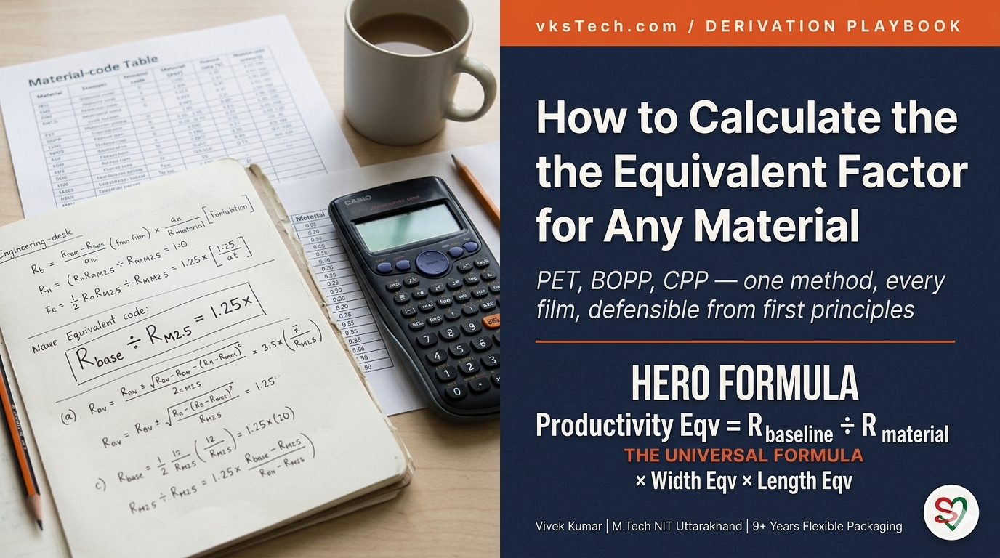
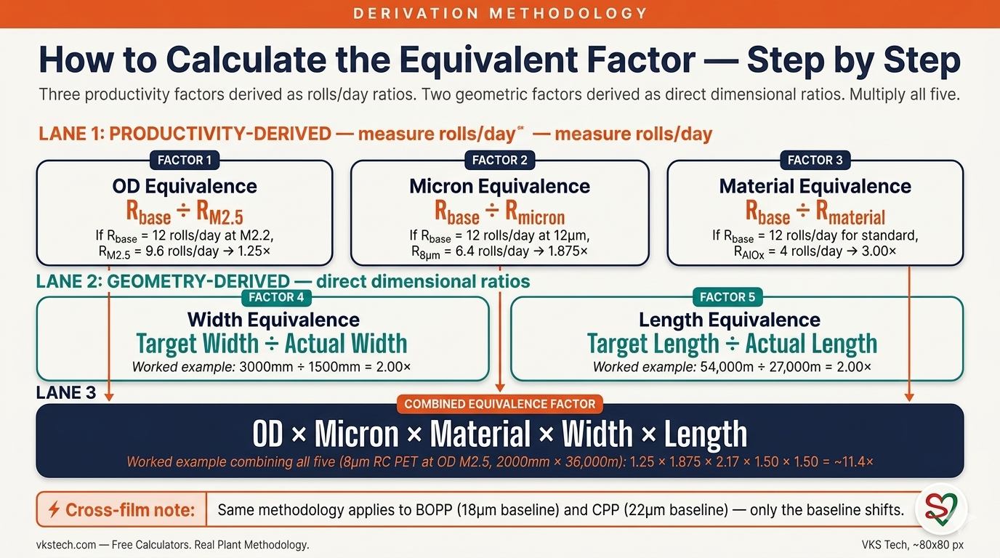
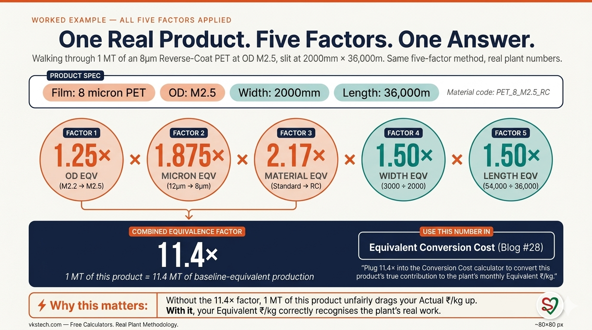
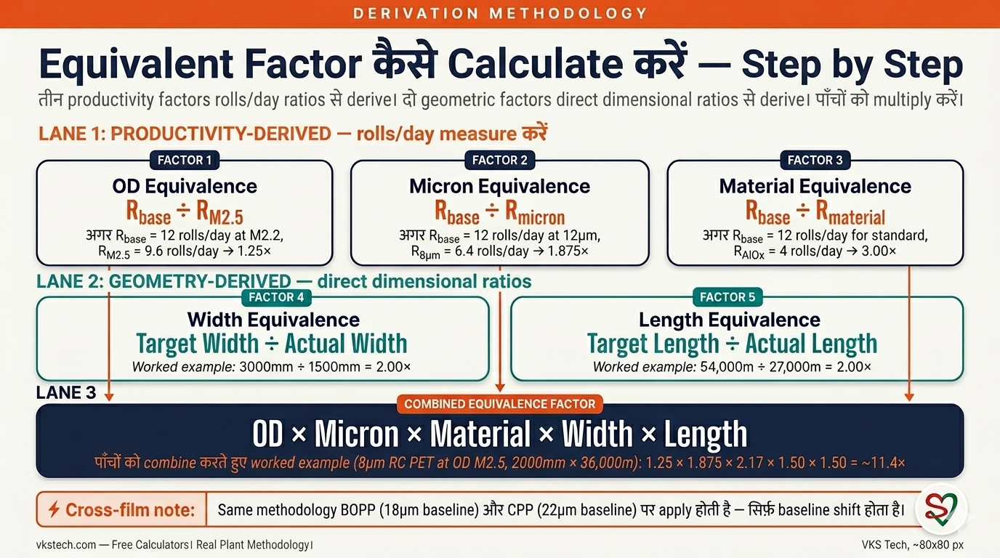
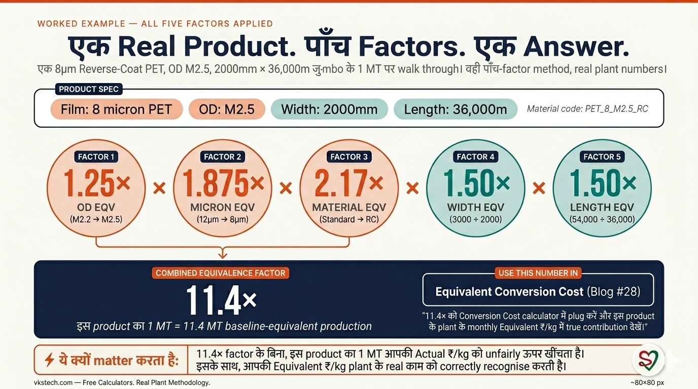

📖 11-min read | Real Plant Methodology | Published January 2025 | Bookmark for annual factor reviews
If you read Blog #28 on Conversion Cost, you saw equivalence factors used as inputs — 1.24× for OD M2.5, 1.875× for 8 micron, 3.00× for AlOx, and so on. The natural next question every plant manager asks is: where do those numbers actually come from? Can I trust them? Can I derive them for my own plant? Can I derive them for a new material my plant just started running?
This blog is the answer. It walks through the derivation methodology for all five equivalence factors, applied to PET, BOPP, CPP, and any other film your plant runs. Eleven minutes. After this, when someone in a review asks "where does that 1.875× come from?" — you'll have the formula on the back of an envelope, and you'll be able to recompute it for any material in two minutes.
What this blog covers vs Blog #30: This blog teaches you how to derive equivalence factors from your plant's rolls/day numbers. The method to compute rolls/day from cycle-time inputs (setup, vacuum, speed, vent, boat-change overhead) is the next blog — Blog #30: How to Calculate Number of Rolls per Day from Metalliser. If you don't yet have rolls/day for each material, build that first using Blog #30, then come back here to derive the factors.
| 1. OD Eqv (speed penalty at higher OD) | R_base ÷ R_OD |
| 2. Micron Eqv (weight + speed penalty) | R_base ÷ R_micron |
| 3. Material Eqv (RC, AlOx, special chemistry) | R_base ÷ R_material |
| 4. Width Eqv | Target Width ÷ Actual Width |
| 5. Length Eqv | Target Length ÷ Actual Length |
Baselines: PET 12μm M2.2 / 3000mm / 54,000m • BOPP 18μm M2.2 / 3000mm / 36,000m • CPP 22μm M2.2 / 3000mm / 24,000m

Three of the five factors (OD, Micron, Material) are productivity-based. They all use the same formula. Once you understand it once, you understand all three. Here it is:
Productivity Eqv Factor = Baseline Rolls/Day ÷ This Material's Rolls/Day
The logic is simple: if your plant's most-run reference material produces 12 rolls per 24-hour day, and a difficult variant of the same material produces only 9.6 rolls per 24-hour day — then 1 roll of the difficult material represents 12/9.6 = 1.25× the work of one baseline roll. That ratio is the equivalence factor.
This formula applies identically whether you're computing OD Eqv (varying OD value, same micron and material), Micron Eqv (varying micron, same OD and material), or Material Eqv (varying chemistry, same micron and OD). The "what's varying" changes; the formula doesn't.
Important: "Rolls per day" here is the maximum sustainable run rate for that specific material on a 24-hour clock — the rate when the line is running cleanly with no extraordinary downtime. For how to compute this number from your plant's cycle-time data, see Blog #30.
Higher OD (Optical Density) means more aluminium deposited per square metre, which means slower line speed for proper coverage. For PET 12 micron, the typical relationship looks like this:
| OD value | What's happening | OD Eqv Factor (typical) |
|---|---|---|
| M2.2 | Baseline. Standard transparent metallised. Normal line speed. | 1.00× (baseline) |
| M2.5 | Thicker deposition. Line speed drops; rolls/day drops proportionally more (extra stabilisation time). | ~1.25× |
| M2.8 | Heavy deposition. Significantly slower line speed and more rejection at QC. | ~1.44× |
How to derive your plant's OD Eqv:
If your baseline runs 12 rolls/day and your M2.5 runs 9.6 rolls/day, your OD Eqv for M2.5 = 12 ÷ 9.6 = 1.25×. If your numbers are different (because your machine, recipe, or operators are different), your factor is different — that is exactly why you derive it locally instead of borrowing.
Thinner film means less weight per metre and lower line speed. Both reduce rolls/day output. The same productivity formula applies. Typical PET values:
| Micron | What's happening | Micron Eqv Factor (typical) |
|---|---|---|
| 12 micron (baseline) | Reference. Standard handling, normal speed. | 1.00× (baseline) |
| 10 micron | Mostly weight effect. Speed penalty smaller. | ~1.20× |
| 8 micron | Weight + significant speed penalty (more web breaks, tighter tension). | ~1.875× |
| 7 micron | Similar regime to 8μm; very slow, very break-prone. | ~1.88× (measure in your plant) |
The 1.875× number for 8μm has a story worth knowing: if you only counted the weight effect (12μm/8μm = 1.5×), you'd undercount the difficulty. The rolls/day actually drops more than weight alone would predict, because thinner film also forces slower line speed. The measured ratio R_base/R_8μm typically lands at ~1.875× — combining both effects. This is why we always derive from rolls/day, never from theoretical weight ratios.
Derivation steps (identical to OD):
Special chemistry products (Reverse/Release Coat, AlOx, and others) demand slower speeds, tighter QC, and often special non-standard width or length metallised. Their rolls/day drops sharply vs the standard transparent baseline.
| Material | What's special | Material Eqv Factor (typical) |
|---|---|---|
| Standard Transparent | Baseline metallisation recipe. | 1.00× (baseline) |
| Reverse/Release Coat (RC) | Special chemistry, slower speed, jumbo length 24,000–48,000m (vs 54,000m for standard). | ~2.17× |
| AlOx (Aluminium Oxide) | Critical material, slow line speed, special non-standard width and length, increased setup time per cycle. | ~3.00× |
| Heat-Seal coated, White-Pigmented, Holographic, Anti-fog, etc. | Use the methodology — measure rolls/day for your plant. | (derive locally) |
Derivation: Same formula. Measure R_base for your standard transparent, measure R_RC for your reverse-coat material, compute ratio. The same for AlOx, holographic, white pigmented, or any new specialty product your plant takes on.
One factor, three penalties: Material Eqv often combines effects that you might be tempted to split into separate sub-factors — special width, special length, slow speed, longer setup. Resist the urge. The rolls/day measurement captures all of them automatically. That's why the productivity ratio is so powerful — it's atheoretical and self-correcting.
These two factors are not productivity-derived. They are computed directly from dimensions, because every metre of jumbo length and every mm of width that doesn't match the baseline triggers an extra changeover somewhere — a slitter changeover for narrower width, a metalliser changeover for shorter jumbo length.
Width Equivalence = Target Width ÷ Actual Width
Length Equivalence = Target Length ÷ Actual Length
Worked example: Standard PET line targets 3000mm width and 54,000m length. A jumbo runs at 1500mm × 27,000m.
That single jumbo represents 4× the changeover work of a baseline jumbo, before you've even applied OD, Micron, or Material factors on top. This is correct — and this is exactly the part of plant work that an "Actual ₹/kg" report fails to recognise.
The honest caveat: Width and Length Eqv stack to large numbers fast. A 1500mm × 18,000m jumbo of AlOx 8μm could touch 8–10× combined factor. That number is mathematically correct but politically explosive in a review. Be ready to show the decomposition: "this 9.0× breaks down as Width 2.0 × Length 3.0 × Material 1.5 — and here are the actual changeover counts that justify each piece." If you can't show the decomposition, expect challenge.

Suppose your plant ran a special product this month: 8μm reverse-coat PET, OD M2.5, slit at 2000mm × 36,000m jumbo length. Compute its combined equivalence factor:
Inputs from your plant:
Combined Eqv = 1.25 × 1.875 × 2.17 × 1.50 × 1.50 = ~11.4×
Yes, 11.4× is high. Yes, it's correct. One MT of this product equates to 11.4 MT of baseline-equivalent production for conversion cost purposes. If your plant's salesforce keeps bringing this product to the table and your Actual ₹/kg keeps "looking bad," this 11.4× is exactly why — and it's exactly why you should be reporting Equivalent ₹/kg alongside Actual.
Everything above applies identically to BOPP and CPP. Only the baseline shifts. Here are the standard baselines:
| Film | Baseline Micron | Baseline OD | Baseline Width | Baseline Jumbo Length |
|---|---|---|---|---|
| PET | 12 micron | M2.2 | 3000mm | 54,000m |
| BOPP | 18 micron | M2.2 | 3000mm | 36,000m |
| CPP | 22 micron | M2.2 | 3000mm | 24,000m |
For BOPP: a 25 micron M2.2 standard run picks up Micron Eqv = R_baseline_BOPP / R_25μm_BOPP (typically below 1.0 since 25μm is heavier and easier than 18μm baseline). A 15 micron BOPP at M2.5 picks up Micron Eqv > 1 (thinner than baseline) plus OD Eqv > 1. Same productivity formula, BOPP-specific baseline.
For CPP: baseline is 22μm M2.2 with a 24,000m jumbo. A 30μm CPP at M2.2 standard is below baseline difficulty; an 18μm at M2.5 is above. The width and length geometric formulas use the CPP baselines (3000mm, 24,000m).
The methodology is universal. Pick the baseline for your film type, measure rolls/day for that film at baseline conditions, then derive every variant by ratio. The numbers are different across films; the math is the same.
Plug in your plant's numbers below. Calculator computes all five factors and the combined factor. If you don't yet have rolls/day numbers, build them using the calculator in Blog #30 first.
Equivalence factors are not "set once and forget." They drift with your plant's reality. Recalibrate whenever any of these triggers fires:
This connects directly back to Blog #28's Mistake #2 — using stale equivalence factors. A factor that was right two years ago can quietly become wrong, and your equivalent conversion cost number drifts with it.
Mistake 1 — Using OEM datasheet speeds instead of measured plant speeds. The machine vendor's datasheet says the line can run at 950 m/min for 12μm M2.2. Your plant's measured sustainable rate is 800 m/min. If you derive your baseline rolls/day from 950 m/min, you'll overestimate baseline and every factor will look smaller than reality, making difficult products appear easier than they are. Fix: always derive from measured rolls/day on your floor, not from datasheets.
Mistake 2 — Using a single best day instead of a steady-state average. Best-day numbers reflect an idealised run with no anomalies. Real plants run with normal frictions. If you use best-day for baseline and steady-state for difficult materials, you'll inflate the factors. Fix: use the average of the past 90 days (or top-3-month average if you want a capability benchmark, but apply it consistently — same window for baseline and for the variant material).
Mistake 3 — Forgetting setup, vent, and boat-change overhead in rolls/day. If you compute rolls/day as just (jumbo length / speed), you'll get an inflated number. The 24-hour day must absorb setup, vacuum-heating, vent, and boat-change time too. Fix: use the full cycle-time formula in Blog #30 — it accounts for every minute lost to non-running activity.
Two-week rollout to derive your plant's complete factor set:
This blog is one piece of the metalliser financial-controls series:
📅 Coming next in this series: "Blog #30 — How to Calculate Number of Rolls per Day from Metalliser". The seven-input productivity formula that powers every rolls/day number in this blog. If you don't yet have measured rolls/day for your plant's materials, that blog gives you the formula to compute them from cycle-time data — setup, vacuum-heating, line speed, jumbo length, vent, boat-change overhead.
📖 11-min read | Real Plant Methodology | January 2025 में published | Annual factor reviews के लिए bookmark करें
अगर आपने Blog #28 — Conversion Cost पढ़ी है, तो आपने equivalence factors inputs के रूप में use होते देखे होंगे — OD M2.5 के लिए 1.24×, 8 micron के लिए 1.875×, AlOx के लिए 3.00×, और इसी तरह। हर plant manager का natural अगला सवाल है: ये numbers आते कहाँ से हैं? क्या मैं इन पर trust कर सकता हूँ? क्या मैं अपने plant के लिए derive कर सकता हूँ? क्या मैं अपने plant के नए material के लिए भी derive कर सकता हूँ?
ये blog उसी का answer है। इसमें पाँचों equivalence factors की derivation methodology PET, BOPP, CPP, और किसी भी film पर apply होती है। ग्यारह minutes। इसके बाद जब कोई review में पूछे "1.875× कहाँ से आया?" — आपके पास envelope-back formula होगा, और आप किसी भी material के लिए दो minutes में recompute कर सकेंगे।
ये blog क्या cover करता है vs Blog #30: ये blog सिखाता है कि अपने plant के rolls/day numbers से equivalence factors कैसे derive करें। Cycle-time inputs (setup, vacuum, speed, vent, boat-change overhead) से rolls/day compute करने का method अगली blog में है — Blog #30: Metalliser से Rolls per Day कैसे Calculate करें। अगर अभी तक हर material के लिए rolls/day numbers नहीं हैं, पहले Blog #30 use करके बनाएँ, फिर यहाँ वापस आकर factors derive करें।
| 1. OD Eqv (higher OD पर speed penalty) | R_base ÷ R_OD |
| 2. Micron Eqv (weight + speed penalty) | R_base ÷ R_micron |
| 3. Material Eqv (RC, AlOx, special chemistry) | R_base ÷ R_material |
| 4. Width Eqv | Target Width ÷ Actual Width |
| 5. Length Eqv | Target Length ÷ Actual Length |
Baselines: PET 12μm M2.2 / 3000mm / 54,000m • BOPP 18μm M2.2 / 3000mm / 36,000m • CPP 22μm M2.2 / 3000mm / 24,000m

पाँच में से तीन factors (OD, Micron, Material) productivity-based हैं। तीनों same formula use करते हैं। एक बार समझ लिया तो तीनों समझ में आ जाएँगे। Formula ये है:
Productivity Eqv Factor = Baseline Rolls/Day ÷ This Material's Rolls/Day
Logic simple है: अगर आपके plant का most-run reference material 24-hour day में 12 rolls produce करता है, और उसी material का difficult variant सिर्फ़ 9.6 rolls produce करता है — तो difficult material का 1 roll = baseline material के 1 roll का 12/9.6 = 1.25× काम है। यही ratio equivalence factor है।
ये formula identically apply होता है — चाहे आप OD Eqv compute कर रहे हों (OD value vary हो रही है, micron और material same), Micron Eqv (micron vary, OD और material same), या Material Eqv (chemistry vary, micron और OD same)। "क्या vary हो रहा है" बदलता है; formula नहीं।
Important: "Rolls per day" यहाँ उस specific material के लिए maximum sustainable run rate है 24-hour clock पर — जब line cleanly चल रही हो बिना extraordinary downtime के। ये number cycle-time data से कैसे compute करें, इसके लिए Blog #30 देखें।
Higher OD (Optical Density) मतलब per square metre ज़्यादा aluminium deposit, मतलब proper coverage के लिए slower line speed। PET 12 micron के लिए typical relationship इस तरह है:
| OD value | क्या हो रहा है | OD Eqv Factor (typical) |
|---|---|---|
| M2.2 | Baseline। Standard transparent metallised। Normal line speed। | 1.00× (baseline) |
| M2.5 | Thicker deposition। Line speed गिरती है; rolls/day proportionally ज़्यादा गिरते हैं (extra stabilisation time)। | ~1.25× |
| M2.8 | Heavy deposition। Significantly slower line speed और QC पर ज़्यादा rejection। | ~1.44× |
अपने plant की OD Eqv कैसे derive करें:
अगर आपका baseline 12 rolls/day है और M2.5 9.6 rolls/day, आपकी OD Eqv for M2.5 = 12 ÷ 9.6 = 1.25×। अगर आपके numbers अलग हैं (क्योंकि आपका machine, recipe, या operators अलग हैं), आपका factor अलग है — बस इसी कारण आप borrow नहीं करते, locally derive करते हैं।
Thinner film मतलब per metre कम weight और lower line speed। दोनों rolls/day output reduce करते हैं। Same productivity formula apply होता है। PET के typical values:
| Micron | क्या हो रहा है | Micron Eqv Factor (typical) |
|---|---|---|
| 12 micron (baseline) | Reference। Standard handling, normal speed। | 1.00× (baseline) |
| 10 micron | ज़्यादातर weight effect। Speed penalty छोटा। | ~1.20× |
| 8 micron | Weight + significant speed penalty (ज़्यादा web breaks, tighter tension)। | ~1.875× |
| 7 micron | 8μm जैसा regime; बहुत slow, बहुत break-prone। | ~1.88× (अपने plant में measure करें) |
8μm के लिए 1.875× number की story जानने लायक़ है: अगर सिर्फ़ weight effect count करते (12μm/8μm = 1.5×), तो difficulty undercount होती। Rolls/day actually weight से ज़्यादा गिरते हैं, क्योंकि thinner film slower line speed force करती है। Measured ratio R_base/R_8μm typically ~1.875× पर land करता है — दोनों effects combine करते हुए। यही reason है कि हम हमेशा rolls/day से derive करते हैं, theoretical weight ratios से कभी नहीं।
Derivation steps (OD जैसे ही):
Special chemistry products (Reverse/Release Coat, AlOx, और बाक़ी) slower speeds, tighter QC, और अक्सर special non-standard width या length metallised demand करते हैं। उनके rolls/day standard transparent baseline से तेज़ी से गिरते हैं।
| Material | क्या special है | Material Eqv Factor (typical) |
|---|---|---|
| Standard Transparent | Baseline metallisation recipe। | 1.00× (baseline) |
| Reverse/Release Coat (RC) | Special chemistry, slower speed, jumbo length 24,000–48,000m (vs standard के 54,000m)। | ~2.17× |
| AlOx (Aluminium Oxide) | Critical material, slow line speed, special non-standard width और length, हर cycle का setup time बढ़ा हुआ। | ~3.00× |
| Heat-Seal coated, White-Pigmented, Holographic, Anti-fog, etc. | Methodology use करें — अपने plant के लिए rolls/day measure करें। | (locally derive करें) |
Derivation: Same formula। अपने standard transparent के लिए R_base measure करें, अपने reverse-coat material के लिए R_RC measure करें, ratio compute करें। AlOx, holographic, white pigmented, या किसी भी नए specialty product के लिए वही।
एक factor, तीन penalties: Material Eqv अक्सर वो effects combine करता है जिन्हें आप अलग sub-factors में बाँटना चाह सकते हैं — special width, special length, slow speed, longer setup। मत बाँटें। Rolls/day measurement automatically सब capture कर लेता है। यही productivity ratio की power है — atheoretical और self-correcting।
ये दो factors productivity-derived नहीं हैं। ये directly dimensions से compute होते हैं, क्योंकि हर metre जumbo length और हर mm width जो baseline से match नहीं करता कहीं न कहीं extra changeover trigger करता है — narrower width के लिए slitter changeover, shorter जumbo length के लिए metalliser changeover।
Width Equivalence = Target Width ÷ Actual Width
Length Equivalence = Target Length ÷ Actual Length
Worked example: Standard PET line 3000mm width और 54,000m length target करती है। एक जumbo 1500mm × 27,000m पर चलता है।
वो single जumbo baseline जumbo का 4× changeover work represent करता है, इससे पहले कि आप OD, Micron, या Material factors apply करें। ये correct है — और यही plant work का वो हिस्सा है जिसे "Actual ₹/kg" report recognise नहीं कर पाती।
Honest caveat: Width और Length Eqv बड़े numbers में जल्दी stack हो जाते हैं। 1500mm × 18,000m जumbo of AlOx 8μm 8–10× combined factor छू सकता है। ये number mathematically correct है पर review में politically explosive है। Decomposition दिखाने के लिए तैयार रहें: "ये 9.0× breaks down इस तरह — Width 2.0 × Length 3.0 × Material 1.5 — और ये actual changeover counts हैं जो हर piece justify करते हैं।" अगर decomposition नहीं दिखा सकते, challenge expect करें।

मान लीजिए आपके plant ने इस महीने एक special product चलाया: 8μm reverse-coat PET, OD M2.5, slit at 2000mm × 36,000m जumbo length। इसका combined equivalence factor compute करें:
आपके plant के Inputs:
Combined Eqv = 1.25 × 1.875 × 2.17 × 1.50 × 1.50 = ~11.4×
हाँ, 11.4× ज़्यादा है। हाँ, सही है। 1 MT इस product का conversion cost purposes के लिए 11.4 MT baseline-equivalent production है। अगर आपकी salesforce ये product लाती रहती है और आपकी Actual ₹/kg "खराब दिखती रहती है" — यही 11.4× exact reason है — और इसीलिए आपको Equivalent ₹/kg Actual के साथ report करनी चाहिए।
ऊपर सब BOPP और CPP पर identically apply होता है। सिर्फ़ baseline shift होता है। Standard baselines:
| Film | Baseline Micron | Baseline OD | Baseline Width | Baseline जumbo Length |
|---|---|---|---|---|
| PET | 12 micron | M2.2 | 3000mm | 54,000m |
| BOPP | 18 micron | M2.2 | 3000mm | 36,000m |
| CPP | 22 micron | M2.2 | 3000mm | 24,000m |
BOPP के लिए: 25 micron M2.2 standard run Micron Eqv pick करता है = R_baseline_BOPP / R_25μm_BOPP (typically 1.0 से नीचे क्योंकि 25μm 18μm baseline से heavier और easier है)। 15 micron BOPP at M2.5 Micron Eqv > 1 (baseline से thinner) plus OD Eqv > 1 pick करता है। Same productivity formula, BOPP-specific baseline।
CPP के लिए: baseline 22μm M2.2 with 24,000m जumbo है। 30μm CPP at M2.2 standard baseline difficulty से नीचे है; 18μm at M2.5 ऊपर है। Width और length geometric formulas CPP baselines (3000mm, 24,000m) use करते हैं।
Methodology universal है। अपनी film type के लिए baseline pick करें, उस film के लिए baseline conditions पर rolls/day measure करें, फिर हर variant ratio से derive करें। Numbers films के across अलग हैं; math वही है।
नीचे अपने plant के numbers plug करें। Calculator पाँचों factors और combined factor compute करता है। अगर अभी तक rolls/day numbers नहीं हैं, पहले Blog #30 के calculator से बनाएँ।
Equivalence factors "एक बार set कर दिए, भूल गए" वाले नहीं हैं। ये आपके plant की reality के साथ drift होते हैं। इन triggers में से कोई भी fire हो — recalibrate करें:
ये directly Blog #28 की Mistake #2 — stale equivalence factors use करना से connect होता है। दो साल पहले सही factor चुपचाप ग़लत हो सकता है, और आपका equivalent conversion cost number उसके साथ drift करता है।
Mistake 1 — Measured plant speeds की जगह OEM datasheet speeds use करना। Machine vendor की datasheet कहती है कि line 12μm M2.2 के लिए 950 m/min पर run कर सकती है। आपके plant की measured sustainable rate 800 m/min है। अगर आप 950 m/min से baseline rolls/day derive करते हैं, आप baseline overestimate कर देंगे और हर factor reality से छोटा दिखेगा, difficult products easier दिखाएगा। Fix: हमेशा अपने floor पर measured rolls/day से derive करें, datasheets से नहीं।
Mistake 2 — Steady-state average की जगह single best day use करना। Best-day numbers बिना anomalies के idealised run reflect करते हैं। Real plants normal frictions के साथ चलते हैं। अगर baseline के लिए best-day और difficult materials के लिए steady-state use करें, factors inflate हो जाएँगे। Fix: पिछले 90 days का average use करें (या top-3-month average अगर capability benchmark चाहिए, पर consistently apply करें — baseline और variant material दोनों के लिए same window)।
Mistake 3 — Rolls/day में setup, vent, और boat-change overhead भूलना। अगर rolls/day सिर्फ़ (jumbo length / speed) compute करते हैं, inflated number मिलेगा। 24-hour day को setup, vacuum-heating, vent, और boat-change time भी absorb करना है। Fix: Blog #30 का full cycle-time formula use करें — ये non-running activity में lost हर minute account करता है।
अपने plant के complete factor set derive करने के लिए दो-week rollout:
ये blog metalliser financial-controls series का एक हिस्सा है:
📅 Series में next आ रहा है: "Blog #30 — Metalliser से Rolls per Day कैसे Calculate करें"। Seven-input productivity formula जो इस blog के हर rolls/day number को power करता है। अगर अभी तक अपने plant के materials के लिए measured rolls/day नहीं हैं, वो blog cycle-time data से compute करने का formula देगी — setup, vacuum-heating, line speed, jumbo length, vent, boat-change overhead।